London 1969 · 28 records · coverage: complete
Cheat codes — Grand Theft Auto: London 1969
Effects with the code for each platform and edition.
Download cheats.json Whole game bundle
| Image | Effect | Codes |
|---|---|---|
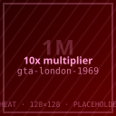 | 10x multiplier | PCiamgod |
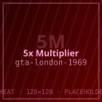 | 5x Multiplier | PlayStationSIDEBURN |
 | 9,999,990 Points | PlayStationBIGBEN |
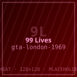 | 99 Lives | PlayStationMCVICAR |
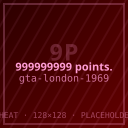 | 999999999 points. | PCaveryrichman |
 | All cheat effects above will be automatically enabled. | PCherc |
| All Cheats | PlayStationHAROLDHAND | |
 | All items, press * for all weapons | PCuaintnuffin |
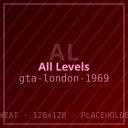 | All Levels | PlayStationRazzle, READERWIFE |
 | All levels, all weapons, infinite ammunition, Get Out Of Jail Free card, armor, 5X multiplier | PlayStationFREEMANS |
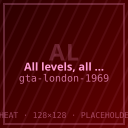 | All levels, all weapons, infinite ammunition, Get out of jail free card, armor, 99 lives, 5X multiplier, maximum wanted level, display co-ordinates | PlayStationGETCARTER |
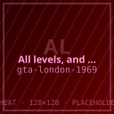 | All levels, and all weapons and unlimited ammunition | PlayStationSORTED |
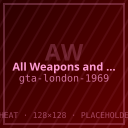 | All Weapons and a Jail Card | PlayStationDONTMESS |
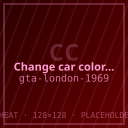 | Change car color by pressing the horn. | PCpsychadelic |
| Diagnostic cheat | PCpieandmash | |
 | Diagnostics cheat, driveby cheat and psychadelic cheat combined | PCrommel |
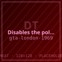 | Disables the police scanner | PCsilence |
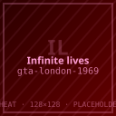 | Infinite lives | PC6661970 |
 | Infinite Weapons, Armor and a Get Out of Jail Free card. | PlayStationTOOLEDUP |
 | London levels 1-2 | PlayStationMAYFAIR |
 | London levels 1-3 | PlayStationPENTHOUSE |
 | Maximum Wanted Level | PlayStationOLDBILL |
| No Cops | PlayStationGRASS | |
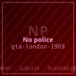 | No police | PCtithead, iamfilth |
 | Press * for all weapons. | PCasawindow, deathtoall |
 | Show Coordinates | PlayStationSWEENEY |
 | Unlocks all levels | PCflashmotor, super well, travelcard |
 | Use guns while driving on bikes or cars. | PCdriveby |
Field definitions
| Field | Type | Required | Notes |
|---|---|---|---|
effect | string | yes | |
codes | array | yes | |
icon | string | null | no | |
verified | boolean | yes | |
source | string | no |